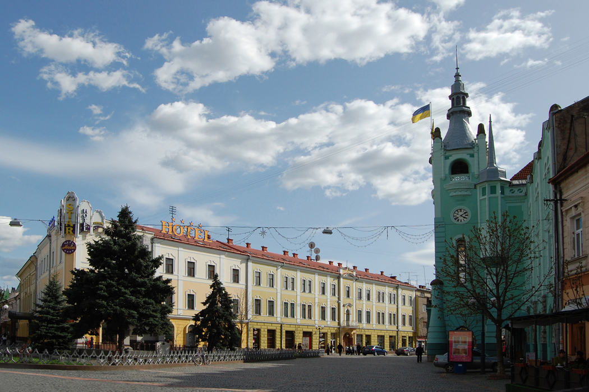

Привіт, я Андрій
Коджу.
Досліджую.
Перезбираю.
Студент групи ІО-41. Люблю знаходити незвичне в інтернеті, писати код і розбиратися, як усе працює.
Познайомитися ближче
01 / 03
Про мене, мої інтереси
та місто, з якого все почалося.
01Знайомство
Коротка історія
Вовк Андрій Андрійович
Народився
17 листопада 2006 року
в місті Мукачево
Освіта
Закінчив школу №187. Зараз навчаюся в КПІ ім. Ігоря Сікорського, група ІО-41.
02Що мене захоплює
Поза навчанням
Три речі, до яких
я повертаюся
- 01Перезбирати систему кожної середи
- 02Шукати дивовижну інформацію в інтернеті
- 03Кодити й пробувати нові ідеї
Улюблені фільм та аніме
Історії, які запам’яталися
- Той, хто біжить по лезу 2049фільм
- Орбіта: Про рух Земліаніме
- Родом із Безодніаніме
03Улюблене місто
Місто, де я народився
Мукачево.
Мукачево мені подобається своїм затишним центром, старими вулицями й особливою атмосферою Закарпаття. Це місто, до якого приємно повертатися: тут знайомі місця щоразу нагадують про дім.

Відкрити сайт міста